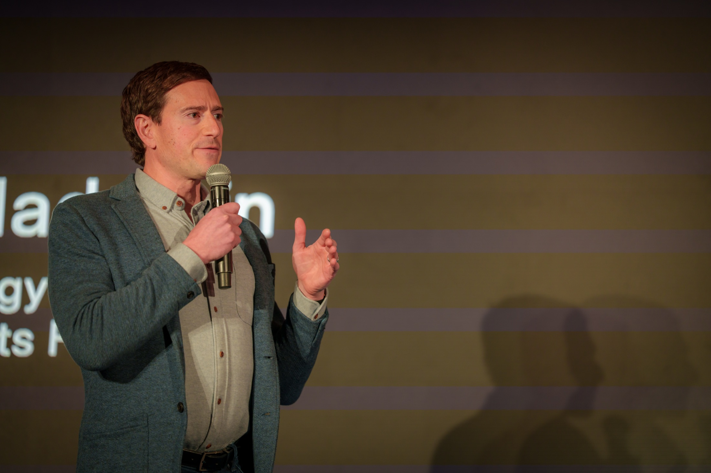

01Why Bitcoin Is Freedom Money
01Why Bitcoin Is Freedom Money
Human rights · Bitcoin · Open systems
Bitcoin, human rights, and freedom tech.
Research, writing, and talks on how open monetary and communication networks help people resist censorship and financial repression.
4 books · 150+ talks and interviews · Work featured in NYT, WSJ, TIME, CNN, The Atlantic, WIRED, and Journal of Democracy

Start Here
Five pieces to understand the thesis


Featured Work
Essential writing, books, and talks
“The biggest privilege in the world is stable money.”
— Alex Gladstein